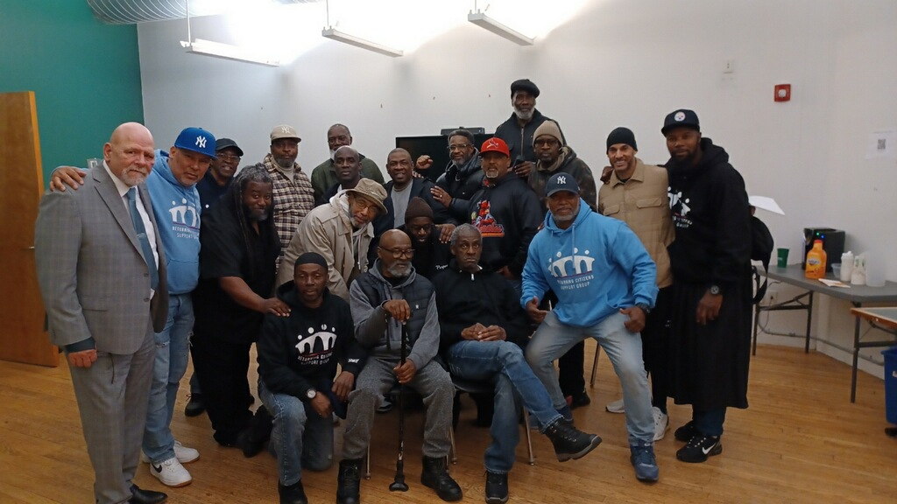

01
Recovery Support
Encouragement, accountability, and faith-centered support for people seeking stability, healing, and a new direction after difficult seasons.

Our Programs
Our programs are built to serve real people facing real struggles. We provide encouragement, prayer, mentorship, practical help, guidance, and pathways to local resources that can help individuals and families take their next steps with hope.
A note for October
Encouragement matters. So does knowing where to find food, who to call, and what to do next. This October, choose one practical need and start there. Our calendar brings church gatherings and community resource opportunities together, so you can find a place to begin.
See the community calendar“Even so faith, if it hath not works, is dead, being alone.”
What Our Programs Do
Redeeming The Time Today exists to stand with people through hard seasons, uncertain transitions, and moments when support is needed most. Our programs focus on restoration, encouragement, community care, and connecting people with both spiritual and practical support.
We believe people need more than good words. They need access to caring relationships, local services, reliable information, and guidance that helps them take action. That is why this page is designed not only to explain what we offer, but to help people search for local support in their own area.
Featured Programs
Each program area is designed to strengthen individuals, families, and communities through compassionate support and practical next steps.
Encouragement, accountability, and faith-centered support for people seeking stability, healing, and a new direction after difficult seasons.
One-on-one guidance that helps individuals build confidence, structure, discipline, and hope through consistent encouragement and care.
Support for families working through transition, stress, instability, relational strain, and the need for stronger connection and guidance.
Outreach efforts that bring encouragement, prayer, connection, and practical assistance directly into the community.
Spiritual support for those who need hope, comfort, strength, and someone to stand with them in prayer during difficult times.
Help identifying services in the community such as food support, housing assistance, counseling, job resources, transportation help, and more.
Areas of Support
ZIP Resource Finder
Enter a U.S. ZIP code and choose the kind of support needed. We will build local search options for community help, support services, maps, and events/resources in that area.
How It Works
Type a U.S. ZIP code to identify the city and state for local search results.
Choose from housing, food, jobs, mental health, recovery, family support, reentry, transportation, or general help.
Use the results below to search community resources, local help organizations, maps, and area-based events or support groups.
Need Immediate Help?
For immediate community resource navigation, call 211. If there is a medical emergency or immediate danger, call 911 right away.
Our Commitment
We know that people often need direction, not just information. This page is designed to help visitors move from uncertainty to action by making it easier to search for local support, services, and opportunities close to where they live.
If you are not sure where to begin, reach out through our contact page. We believe every person deserves dignity, support, and a real opportunity to move forward.